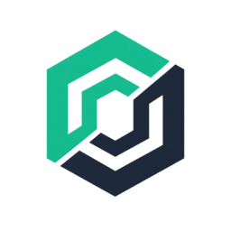

TradeSummitLegal
TradeSummit is non-custodial trading infrastructure. These terms apply to the website, the terminal, and any interaction with the gateway.
Terms of Service
TradeSummit provides software that routes orders you sign to the Hyperliquid order book. It does not hold your funds, cannot move your funds, and cannot block withdrawals. You retain full custody of your assets at all times.
You are responsible for every order submitted from your wallet, including orders routed through the TradeSummit gateway. The gateway enforces a server-side risk check, but that check is a safeguard, not a guarantee of profit or loss protection.
TradeSummit charges a builder fee on filled orders, currently 1.0 bps at the base tier, plus Hyperliquid's own fees. No deposit, withdrawal, or subscription fee is charged by TradeSummit.
The service is provided "as is", without warranty of any kind. To the maximum extent permitted by law, TradeSummit is not liable for losses arising from market movement, venue outages, or actions you authorize.
Privacy Policy
TradeSummit does not require an account and does not store your private keys. Your wallet address is public on-chain data; the terminal reads it from your wallet and uses it to query public venue data.
The gateway records structured operational logs (order routing decisions, connection counts, and error states) for reliability and abuse prevention. These logs do not contain private keys or signed payloads beyond what is needed to route an order.
Analytics, where enabled, track aggregate product usage only. No personal data is sold or shared with third parties beyond what is required to operate the service.
Jurisdiction and Restricted Regions
Digital asset trading is not permitted in all jurisdictions. You are responsible for ensuring that your use of TradeSummit complies with the laws of your location. Do not use the service if it is prohibited where you reside.
TradeSummit is not available to residents of jurisdictions subject to comprehensive sanctions or where the service would violate local financial regulations. Access from such regions may be blocked.
Nothing on this site is investment advice or a solicitation to trade. Digital asset trading involves substantial risk of loss.